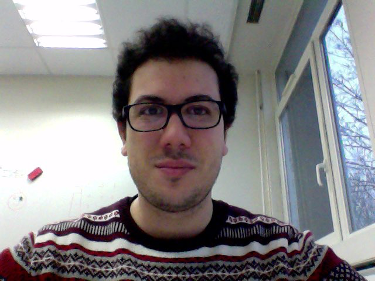

research

Christophe DJEMIEL, Ph.D. 
big data | ecology | bioinformatics
first.last@gmail.com
INRAE of Dijon - UMR1347, France
Ph.D. thesis
Title
Study of bacterial and fungal diversity during flax dew-retting by using metabarcoding
Abstract
Flax (Linum ustitatissimum L.) dew-retting is a short-term, semi-controlled natural process during which plant cell walls are partially degraded by microorganisms to facilitate fiber extraction for various industrial applications. Under- and over-retting are associated with ‘bad fiber quality’ and it is therefore essential to master this process. The microbiology of dew-retting is poorly characterized mainly because it is currently based on the utilization of cultured approaches and phenotypic identification. The implementation of a metabarcoding approach during three independant flax dew-retting campaigns allowed us to characterize, for the first time, the bacterial and fungal community dynamics at this ecosystem level. The taxonomic assignment of OTUs (Operational Taxonomic Units) led to the identification of new taxa not previously associated with dew-retting in particular a high presence of Bacteroidetes phylum. Multivariate analysis and correlation tests identified a number of factors affecting this process. We have demonstrated : (I) that swathe turning has a significant effect on the microbial structures, (ii) the existence of a "terroir" effect and the fact that bacterial communities are affected by precipitation and (iii) the existence of a year effect and the fact that fungal communities are affected by temperature. Bacterial CAZyme (Carbohydrate-Active-Enzymes) predictions, allowed us to identify different families involved in plant cell wall degradation thereby providing a basis for future studies using a metatranscriptomic approach.
Jury- Dre Fabienne GUILLON – Research Director – INRA de Nantes (Referee)
- Dr Lionel RANJARD – Research Director – INRA de Dijon (Referee)
- Dre Brigitte CHABBERT – Researcher - INRA de Reims (Inspector)
- Dr Kjell SERGEANT – Researcher – Luxembourg Institute of Science and Technology (Inspector)
- Dre Anne HARDUIN-LEPERS – Research Director – CNRS, Université de Lille (Inspector, President of the jury)
- Dr Sébastien GREC – Assistant Professor, Université de Lille (Thesis supervisor)
- Pr Simon HAWKINS – Full Professor – Université de Lille (Thesis supervisor)